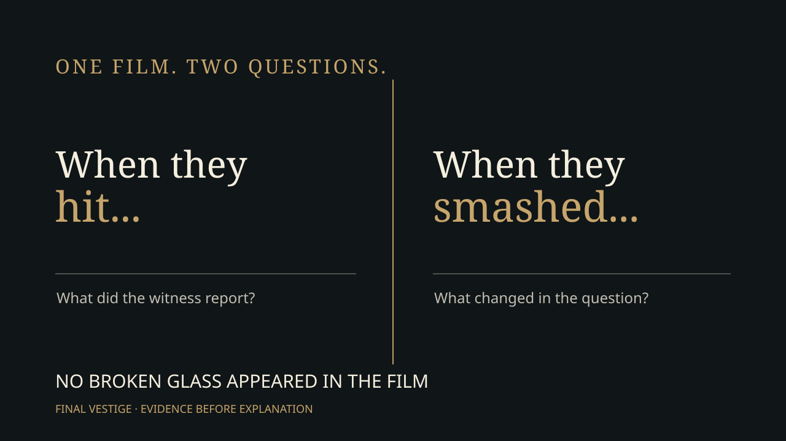

Field Guide · Tools under review
You can buy a recording. Not a guarantee.
Twelve minutes is a useful amount of time. Whether twelve minutes of a particular audio creates an hour of meditation benefits is a very different claim. Here is the real Zen12 package, the evidence boundary, and something useful to try for free.
Original independent editorial review · no personal-use claims · no active sale or tracking
Variant B only · optional original film treatment
Forty-two seconds on the missing glass

Original storyboard and accessible transcript only. A playable 42-second video has not been encoded or hosted for this pilot. No autoplay or third-party player is installed.
Read the full 42-second narration and caption plan
0–7s: There was no broken glass in the film. That was the point.
7–14s: Researchers changed one verb in a question about a traffic accident.
14–21s: Later, more people in one wording group reported glass that never appeared.
21–28s: A suggestive question can influence an answer. It does not prove mind control.
28–35s: The same caution matters when a product promises a new brain state.
35–42s: Check the evidence. Check the actual offer. Decide for yourself.
Caption timing is specified in r351-captions.vtt. Before any staged playback QA, render a properly compressed captioned film; ensure keyboard controls, genuine poster accessibility, muted/no autoplay and a transcript visible without scripting.
The independent question
What are you actually paying for?
In a classic traffic-film experiment, a single word in a follow-up question changed later accounts of what people had seen. The glass was not in the film; the suggestion was in the question. That is not a hypnosis experiment. It is a reminder to separate what we experience from the explanation offered afterward.
Zen12 is selling a structured collection of twelve-minute guided audio sessions. The seller also promises unusually rapid meditation benefits and improved focus. This review can establish the package contents from the official sales page, but not that those efficacy promises occur for a particular listener. An independent experiment with the exact commercial product would be needed.
Read the research behind the distinction in Final Vestige’s unpublished investigation The Word That Wasn't in the Film. For a public historical foundation, visit Puységur’s Animal Magnetism Files, where testimony, operator influence and claims of unusual power are tracked separately.
What the seller lists · 13 Nov 2026
Three packages. Three different scopes.
First six levels
24 MP3s. Listed for those starting with the introductory and intermediate levels.
$67.77Seller-page display, not final checkout.
All twelve levels
48 MP3s, manuals, quick-start information and the seller-listed bonuses, including a training call.
$87.99Seller-page display, not final checkout.
Final six levels
24 MP3s, offered to people who already have meditation experience.
$67.77Seller-page display, not final checkout.
Source: official Zen12 sales page, reviewed 13 November 2026. Figures may change. Confirm exact product, taxes, bundles, recurring charges and refund terms at the merchant’s final checkout before purchasing. No authenticated transaction was completed in this review.
Useful without purchasing
A free twelve-minute comparison
Before you buy a recording promising easier focus, spend twelve minutes observing what an ordinary, no-cost session does for you. Select one harmless task you already need to complete, state a measurable goal and set a timer. At the end record what actually happened—one paragraph drafted, five notes sorted, three interruptions noticed. Repeat on comparable days. Do not treat mood or a preferred listening style as proof of a brainwave mechanism.
If your priority is a structured longer routine rather than a paid recording, the existing free Seven Day Focus Fieldbook has an independent twelve-minute starter method, guided practices and a thirty-day log. That is Final Vestige’s one established Jetpack/Dispatch pathway; no new signup is required here.
Evidence, not endorsement
What research can—and cannot—say
Laboratory research supports specific effects of suggestive questions on reporting and remembering. Reviews of hypnosis find studied effects in some settings, especially some clinical pain and procedure contexts, while competing theories of mechanism remain unresolved. Those papers do not test Zen12 Premium and cannot substantiate claims that one of its twelve-minute files replaces an hour of meditation, reliably improves health, or guarantees focus.
The commercial choice can still be ordinary and valid: perhaps you prefer a downloadable guided routine, the range of tracks or the included guides. These are convenience and format preferences, not proven improvements. The seller describes a one-year money-back guarantee; confirm exact refund procedures, jurisdiction and exclusions on the current checkout and merchant terms. This page has not independently tested the refund process.
Independent research: Loftus & Palmer (1974); Loftus (2005); Zahedi, Lynn & Sommer (2024); Rosendahl, Alldredge & Haddenhorst (2024). Full citations and links appear in the unpublished editorial ledger and the release review matrix.
Buyer objections
Four reasons to hesitate—and how to evaluate them
“Will this fix my concentration?”
No reliable product-specific outcome evidence was established here. A serious concentration problem deserves evaluation appropriate to the individual, not a retail-audio guarantee.
“Does the one-hour comparison hold?”
That is the seller’s claim, not a demonstrated equivalence between these files and a defined hour-long meditation protocol.
“Why not use the free sample?”
You may choose to examine it, but Zen12’s free-audio page explicitly says you will receive the merchant’s newsletter. It is a separate data relationship from Final Vestige’s Focus/Dispatch.
“What if I dislike it?”
The seller advertises a one-year guarantee. Read current terms, verify the final checkout amount, and retain your receipt. We have not conducted a refund request.
Optional commercial route · not active
Is the full Zen12 library a fit?
If you specifically want twelve graduated levels of downloadable meditation audio and understand the limitations above, Premium is the seller-described complete course. If you only want to see whether brief structured sessions fit your day, begin with the free exercise and Fieldbook instead. The editorial investigation remains free regardless of a future purchase.
Affiliate disclosure: If you eventually purchase through a merchant link here, Final Vestige may earn a commission at no additional cost to you. This recommendation would be a commercial link, not evidence that the product works. No affiliate link is active in this unpublished review.
Held pending authenticated Final Vestige partner approval, approved channel and creative rights, issued tracking URL, verified checkout and founder release authorization.